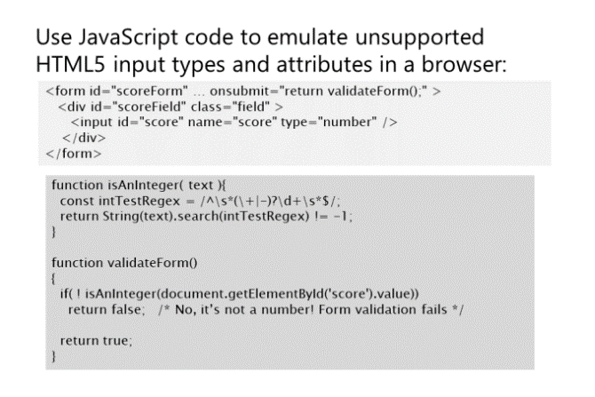
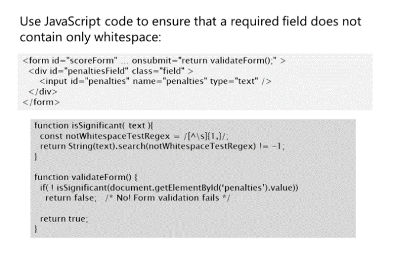
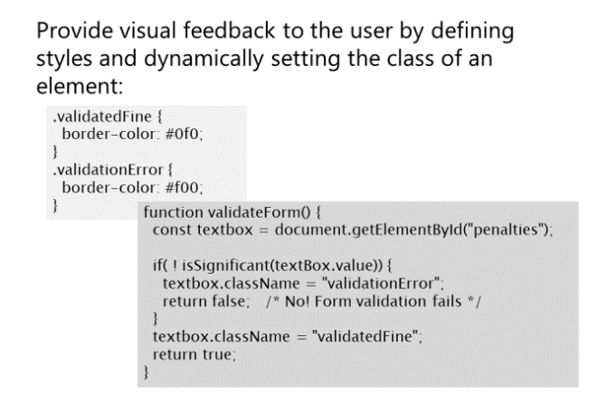

Poniższy przykład kodu pokazuje formularz, który
uruchamia metodę validateForm, gdy użytkownik
przesyła dane. Atrybut onsubmit formularza określa kod JavaScript do uruchomienia
Jeśli sprawdzanie poprawności dowolnego pola zakończy się niepowodzeniem, funkcja zwraca false i dane sie nie wysylają.
Każde pole wejściowe w formularzu również wywołuje zdarzenie wejściowe i możesz je przechwycic, jeśli tylko potrzebujesz
wykonaj walidację znak po znaku dla wybranych pól, a nie dla całego formularza. To sprawdzanie poprawności następuje, gdy użytkownik wprowadza dane, a nie podczas przesyłania formularza, możesz
sprawdzic poprawność danych wprowadzonych w polu w następujący sposób:
Możesz także użyć atrybutu oninput inputa, aby przechwycić zdarzenie wejściowe,
zamiast używania funkcji addEventListener.


„\s” w wyrażeniu regularnym pasuje do dowolnego znaku spacji, więc
wzorzec „[^\s]” pasuje do dowolnych znaków, które nie są spacjami. Wyrażenie „{1,}” stosuje
poprzedzający wzór jeden lub więcej razy.
Strona z wyrażeniami regularnymi
